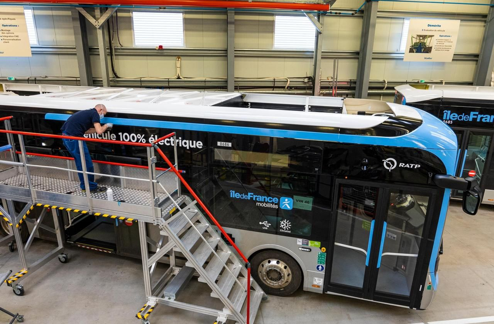
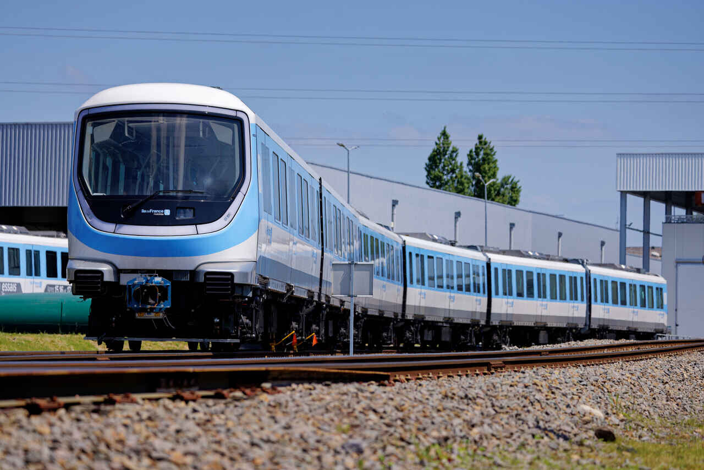

Future.&.Transports
During the 2024 Olympic Games in Paris, public transport played a key role in getting spectators to the venues. This increase in passenger numbers should have had a significant impact on the creation of multiple greenhouse gases. However, RATP managed to limit its ecological footprint by implementing a number of different measures.
Transformation and sustainable action
Since 2014, RATP has been slowly converting their petrol buses to electric and biomethane (biomethane is a renewable gas produced from natural organic matter and a natural phenomenon called anaerobic digestion) which are much more environmentally friendly. This has resulted in a 50% reduction in greenhouse gas emissions.
The platforms have been gradually modernised over the years, with the installation of new LED lights that consume 2 times less electricity than before, but which also have a longer lifespan, increasing from 3 years to 5 years.
Some Métro stations benefit from natural heating thanks to the capture of heat from nearby geothermal sources. The heat from transport in service is also highlighted, as it is an initially wasted form of heating that is used to help heat nearby buildings above it.
The waste produced by RATP is almost entirely transformed in order to further reduce its ecological footprint. These resources, which were thought to be waste, are used in various sectors, such as recycling or energy creation. The company has also set up systems to reuse the water it consumes. It is also investing in new energy sources such as solar, wind and biomass to meet its energy needs.
Developing the transport network

The efficiency of RATP's means of transport and their low ecological footprint are encouraging their development. Numerous projects are underway to increasingly connect the suburbs with each other and with Paris.
These include extensions to the:
T1 from Asnières to Colombes
T1 from Noisy-le-Sec to Val de Fontenay
T7 from Athis-Mons to Juvisny-sur-Orge
T13 from Saint-Germain to Achères
RER E from Saint-Lazare to Mantes-la-Jolie
New transport lines :
Metro 15 linking several towns around Paris
Metro 16: Saint-Denis Pleyel to Noisy-Champ
Metro 17: Saint-Denis Pleyel to Le Mesnil Amelot
Metro 18 from Aéroport d'Orly to Versailles Chantiers
C1 cable car from Créteil to Villeneuve-Saint-Georges